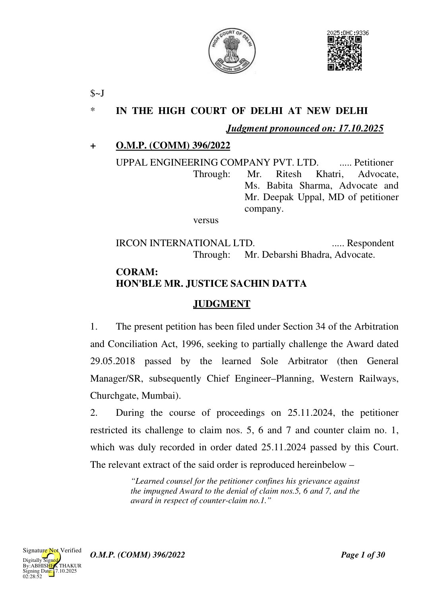
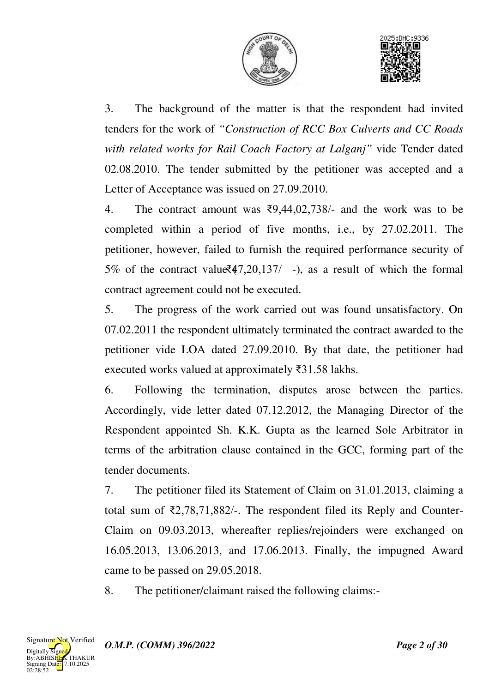
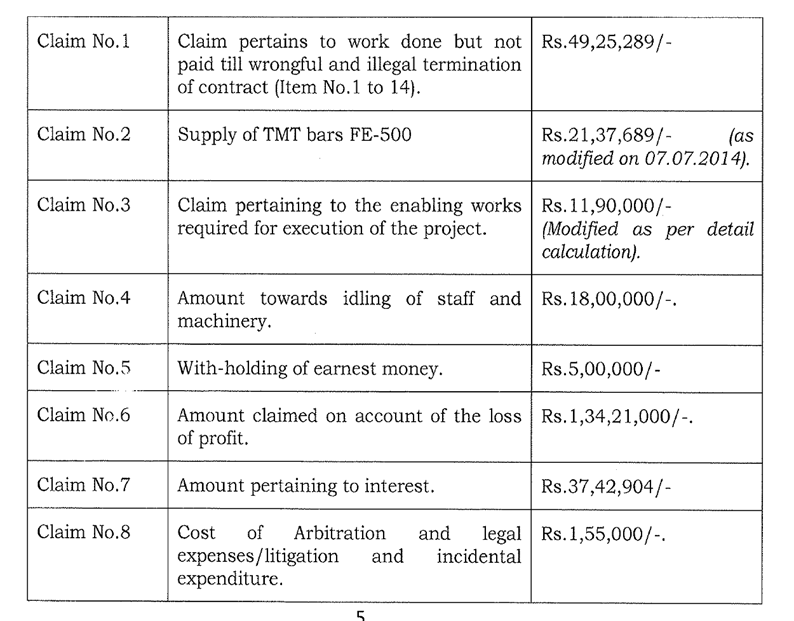
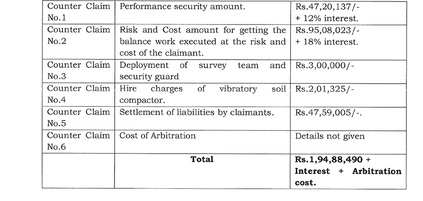
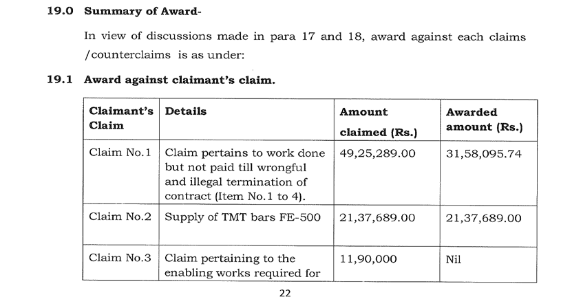
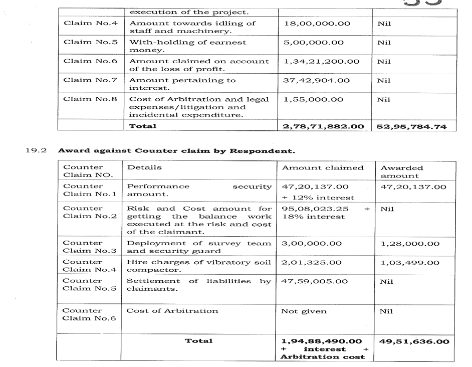

- The respondent raised the following counter claims -

- The learned Arbitrator concluded as follows with respect to the aforesaid claims of the petitioner and counter claims of the respondent:-
O.M.P. (COMM) 396/2022


- For adjudicating the claims and counter claims of the petitioner and
O.M.P. (COMM) 396/2022
the respondent respectively, the following issues were framed by the learned arbitrator – “14. Issues: (i)Whether the respondent committed the breach of contract as per averment made in the statement of fact and claims rejoinder. (ii)whether the claimant committed breach of contract as shown in the respondent's reply to the claims, rejoinder and counter claims. (iii)Whether the claimant is entitled to recover Rs.2,78,77,8821- and interest from the respondent as damages under various heads given in the statement of claims. (iv)Whether the respondent is entitled to recover Rs.1,94,88,490/plus interest and arbitration cost from the claimants by way of counter claims.”
- While dealing with issue nos. 14 (i) and 14 (ii) the learned arbitrator first noted the contentions of the claimant and the respondent as under – “15.0 According to claimant, main reason for non-execution of work was that complete site for road construction was not given and "good for construction" drawing for RCC box was given late and that too only for 100m out of total scope of 150m. Also RCC hume pipe size was changed from 600m to 450mm and TMT bar specification changed from Fe415 to FE-500. On the other end respondent pleaded that claimant failed to deploy adequate manpower, resources and funds for execution of work since beginning. Claimant even didn't execute the work of cement concrete road costing Rs. 180 lacs (19% of contract value) for which clear site, drawing etc. were available. The good for construction drawing for RCC box were given on 27.10.2010 (one month after issue of LOA) for 100m length but claimant didn't start the work due to their own reasons. In their plea respondent also stated that claimant failed to submit performance guarantee of 5% value i.e. Rs.47, 20,137/ in spite of repeated reminder and is a clear breach of contract. The documentary and oral evidence of both the sides has been analysed on these dispute points.”
- Thereafter the learned arbitrator proceeded to adjudicate the said contentions of both the parties by dividing the said issues in seven parts as under –
O.M.P. (COMM) 396/2022
i. Drawing for construction of RCC box culvert and use of TMT FE-500 Upon considering the documents and arguments of both parties the learned arbitrator observed that, there was a partial lapse on the part of the respondent, as the “good for construction” drawings were delayed for 30 days (27.09.2010 – 27.10.2010) and the work was kept on hold for 26 days (12.11.2010 – 08.12.2010) due to the change from FE-415 to FE-500. However, the learned Arbitrator held that there were major lapses on the part of the claimant. Specifically, the claimant failed to commence work for 16 days even after issuance of “Good for construction” drawings and lost time until 12.11.2010. More significantly, in the two-month period after revised drawings were issued (08.12.2010 – 07.02.2011), the claimant was expected to achieve 40% progress of the 100m RCC box, valued at approximately ₹203.7 lakhs, but executed work worth only ₹31.58 lakhs. This shortfall was considered a gross lapse attributable to the claimant. ii. Complete site was not made available for road construction and location of road was changed. After analyzing the documentary evidence and oral arguments, the learned Arbitrator concluded that despite issuance of drawings on 27.10.2010 and submission of a fresh bar chart on 13.11.2010 assuring completion by
O.M.P. (COMM) 396/2022
14.01.2011, the claimant failed to achieve meaningful progress. This compelled the respondent to withdraw prime locations of work from the claimant and get the same executed through other resources. The learned Arbitrator further observed that the respondent changed the location of the CC road solely due to the claimant’s poor progress, and that too with the claimant’s consent. Ultimately, the learned Arbitrator recorded that the total work executed by the claimant, including the RCC box, amounted to only ₹ 31.58 lakhs (3.35% of the contract value). Accordingly, the learned Arbitrator held that the non-execution of the CC road work was a major lapse on the part of the claimant. iii. Change in decision of RCC hume pipe NP2 from 600 mm to 450 mm dia The learned arbitrator observed that the claimant, through its letter dated 29.10.2010, informed that RCC hume pipes of 600 mm dia NP-2 were not available in Kanpur/Lucknow and proposed to use readily available 450 mm dia pipes. The respondent accepted this request and accordingly issued “good for construction” drawings on 17.11.2010. The learned Sole Arbitrator held that since this modification was made at the behest of the claimant, there was no lapse on the part of the respondent. iv. Principal Employer Certificate was not given by respondent.
O.M.P. (COMM) 396/2022
It was observed that the Principal Employer Certificate signed by the Ministry of Railways dated 25.10.2010, was issued by the respondent on 17.11.2010. The respondent alleged the claimant was reluctant to deploy even fewer than 20 labourers at the site and instead requested the respondent to make such arrangements. The learned Arbitrator concluded that there was no lapse on the part of the respondent in this regard. v. TBM was provided on 06.10.2010 by respondent. On examining the documents, the learned Arbitrator noted that the claimant had not raised any demand for TBM between 27.09.2010 and 06.10.2010. The details of the TBM, signed by the Chief Engineer, RCF, on 28.05.2010, were readily available with the respondent and were immediately provided to the claimant upon demand on 06.10.2010. The learned Sole Arbitrator thus found no lapse on the part of the respondent. vi. Failure of claimant to deposit required preperformance security 5% of contract value i.e. Rs. 47,20,137/- to respondent The learned arbitrator noted that the claimant failed to deposit the required performance security amounting to ₹47,20,137/- (5% of the contract value) within 28 days of issuance of the Letter of Acceptance, i.e., by 26.10.2010, as mandated under Clause 8.2 of the GCC. The respondent
O.M.P. (COMM) 396/2022
issued repeated reminders on 27.09.2010, 20.10.2010, 01.12.2010, 18.12.2010, and 04.02.2011, but the claimant failed to comply. Instead, the claimant repeatedly sought extensions (up to 20.11.2010 and later up to 03.12.2010) but never furnished the security till termination of the contract. The learned Arbitrator held this to be a major lapse on the part of the claimant, as it amounted to non-fulfilment of the most fundamental contractual obligation. vii. Claimant could not deploy requisite resources, manpower and mobilize adequate fund On a consideration of the documents and oral submissions of both sides, the learned Arbitrator concluded that the claimant failed to deploy the requisite resources and manpower. Consequently, even after all drawings were issued, the claimant could not achieve the expected prorata progress. This was held to be a major lapse attributable to the claimant.
- Ultimately, the learned arbitrator under the head “breach of the contract” concluded as under – “After considering the documents submitted both by claimant and respondent, pleading during arbitration hearings and details discussed in proceedings paras 15.1 to 15.7, Sole Arbitrator is of the view that there is partial breach of contract from respondent end on account of delay in providing the Good for construction drawings and revision of decision for use of FE-500 but there is major breach of contract by the claimant for not submission of required performance security till the termination of contract and inadequate deployment of labour and resources to achieve the prorate progress.”
O.M.P. (COMM) 396/2022
- Subsequently, in order to adjudicate issue nos. 14 (iii) and 14(iv) the learned Arbitrator considered the respective claims and counterclaims of both parties. As noted, the petitioner has confined its challenge to the impugned award only to the extent of the learned Arbitrator’s findings on Claim Nos. 5, 6, and 7, as well as Counter Claim No. 1.
- The findings of the learned Arbitrator on Claim No. 5 are reproduced hereunder: “Sole Arbitrations is of the view that in present case, claimant did not submit the performance guarantee thus earnest money is liable to be forfeited as per provisions of para 8.2 of GCC. Claimant has asked for payment of part work executed by them. As per para 8.3(i) of contract document retention money is recoverable @ 10% amount on account of bill by adjusting the Earnest money till retention money is recovered upto 5% of the contract value (Rs.47,20,137/ -). The retention money is refundable only after fulfilling the conditions of para 8.5 of the conditions of contract. In present case condition of para 8.5 of satisfactory completion is not fulfilled due to termination and risk and cost contract, thus claimant is not entitled for refund of earnest money. Arbitrator's Decision : amount awarded against Claim No. 5 is NIL.”
- Relevant portion of the learned arbitrator’s finding with respect to claim no. 6 is reproduced as under – “(i) Claimant has submitted the claim anticipating a profit of 15% if residual work would have been completed by them.
- As already discussed at para 15.1 progress of work has been very poor and was far below then the prorate progress after award of contract and even didn't improved between 08.12.2010 to 07.02.2011 during which required site and good for construction drawing were available. Sole Arbitrator is of the view that it is difficult to assume that work should have been completed by claimant in stipulated time of 5 months thus the question of loss of profit is totally hypothetical and is not sustainable. Arbitrator’s decision: Amount awarded against Claim No.6 is NIL.”
O.M.P. (COMM) 396/2022
- As far as claim no. 7 is concerned the learned Arbitrator has observed as under – “The claimant has executed the work of only Rs.31,58,095.74 as admissible under claim No.1, that too was payable only if claimant would have submitted the required performance security and contract agreement is signed. Sole Arbitrator is of the view that contract agreement was not signed due to lapse of claimant thus any interest on amount of work done is not admissible.”
- While adjudicating counter claim no. 1, the learned Arbitrator gave the following findings – “Respondent in their submission of rejoinder to SOFC Date 09.03.2013 submitted that claimant was required to submit performance guarantee of 5% of contract value i.e. Rs.47,20,137/- within 28 days of LOA but failed to do so. Inspite of repeated reminders of date 20.11.2010 (ExhibitR/21), date 01.12.2010 (Exhibit R/24), date 18.12.2010 (Exhibit R/26), and date 04.02.2011 (Exhibit R/35) and claimant's assurance date 20.10.2010 (Exhibit P / 13) & date 29.11.2010 (Exhibit R/23) claimant failed to submit the required performance guarantee till termination of contract and failed to fulfil their contractual obligation which resulted into non-signing of contract agreement on claimant's account.
- Arbitrator is of the view that non-submission of performance security of the 5% of contract value i.e. Rs.47,20,137/- within 28 days of LOA and even till termination of contract (4 months 10 days of issue of LOA) against total completion period of 5 months is a gross lapse at the part of the claimant and breach of contract. Respondent is entitled to recover the amount of PG of Rs.47,20,137/ - from the claimant.
- Sole Arbitrator is also of view that no interest is payable on performance guarantee when submitted in the form of bank guarantee thus no interest is recoverable from claimant. Arbitrator’s Decision : Respondent is entitled to recover a sum of Rs.47,20,137/- from the claimant’s dues. Amount awarded = Rs.47,20,137/-”
- The case of the petitioner is that LOA dated 27.9.2010 was awarded to the petitioner for Construction of RCC Box Culverts and CC Roads,
O.M.P. (COMM) 396/2022
however, it is submitted that 81 percent of the work was never to be executed. It is submitted that no drawings, decisions, or site were provided on time by the respondent. Subsequently, a major portion of the work was dropped. Further, before the expiry of the completion period, the work was illegally terminated by the respondent under Clause 50.1 of the contract.
- As regards Counter Claim No.1, it is submitted that no contract agreement was formally executed till the date of termination. Performance security, envisaged under Clause 8.2(i) at 5%, was never submitted since the petitioner remained uncertain whether the work was to be carried out, in view of the indecision of the respondent and non-availability of drawings. The learned Arbitrator, however, erroneously allowed this counter claim, an award which is patently illegal and against public policy.
- Regarding claim no. 5 it is submitted that the learned Arbitrator gave vague reasons for non-release of the EMD, equating the same with retention money. Further it is submitted that the termination itself was illegal. It is submitted that the learned Arbitrator wrongly concluded that there was a major lapse on the part of the petitioner despite the fact that (i) 81% of the site was not handed over within three months, (ii) repeated requests for extension were denied. As regards the notices sent by the respondent to the petitioner, it has been submitted as under – “ii. First 7 days notice dated 18.12.2010 (ref. page 286) was actually served on 20.12.10; whereas, the drawing was given on 08.12.2010, and decision for box culvert was still awaited ref. reply datd 20.12.2010 (@page 289). iii. Second 7 days notice dtd 21.01.2011(ref. page 298) was sent, whereas the extension in time limit was denied.
iv. First 48 hours notice dated 30.01.2011 was actually sent on
O.M.P. (COMM) 396/2022
24.02.2011, which was not possible to be sent on such date, but it was only to cover their own lacuna (ref. page 315). virtually this letter was never served before the termination notice, which was mandatory. v. Second 48 hours notice was sent on 04.02.2011, whereas, on 31.1.2011 vide another letter (ref. letter on pg 316 and para 7@ page
- vi. Reply dated 4.2.2011 (ref. page 329) was not considered at all by Respondent and on 07.02.2011 terminated the contract.”
- It is submitted that the learned Arbitrator has wrongly observed that there was non-commencement of work for 16 days after issuance of drawings, though in fact the relevant culvert was not to be executed at all, as confirmed by a response dated 16.02.2012 sent by the respondent, to an RTI application filed by the petitioner. The RTI reply dated 16.02.2012 reads as under– “Sub.: Information sought under the Right to Information Act, 2005. Information sought under the Right to Information Act 2005. We acknowledge receipt of your application No. Nil dated 19.01.12 received on 24.01.2012. The parawise reply to the queries asked for wide your letter dt. 19.01.12, is as under :-
- IRCON handed over the complete site for construction of Box Culvert to the earlier Contractor, M/s Uppal Engineering Company Pvt. Ltd. on 06.10.2010.
- Final drawings of the construction Box Culvert were issued to the earlier Contractor, M/s Uppal Engineering Company Pvt. Ltd. on 08.12.2010.
- Performance Guarantee was furnished by M/s Hi-tech Competent Builders Private Limited on 26.04.2011.
- The Gross value of work executed measured of M/s Hi-Tech Competent Builders Private Limited has been asked as on 05.01.2012. The Gross Value as on 06.01.2012 is available and is Rs.3,73,78,653/-.
- The Gross value of Secured Advance, paid to Mrs Hi-Tech Competent Builders Private Limited has been asked as on 05.01.2012 The Gross Value as on 06.01.2012 is available and is Rs.51,04,410/-. 8 a. M/s Ansh Project Services is working Contractor of IRCON in this
O.M.P. (COMM) 396/2022
project. M/s Trivedi Enterprises is not working Contractor of IRCON in this project.
- b. M/s Hi-Tech Competent Builders Private Limited are not working at this project of IRCON other than for RCC Box Culvert & CC Road in the Rail Coach Factory, Rae Bareli. с. M/s Hi-Tech Competent Builders Private Limited are not working as sub-contractor on any project of IRCON in Rail Coach Factory, Rae Bareli. d. Answer is 'NO' to (c) above. The offer of M/s Ansh Project Services 174/199, AKL Kyadgang, Allahabad was not considered technically suitable as the bidder did not meet the eligibility criteria of having completed any work of similar nature of required value as per Tender conditions.”
- Reliance has also been placed on the following paragraph of the minutes of meeting dated 12.11.2010 – “As on date it is made understood by RCF that the construction of RCC Box be kept on hold, till final decision is taken by RCF. Already PCC in length of approximate 40m has already been done.”
- It is further submitted that the learned Arbitrator unilaterally framed issues; The core issue of wrongful termination was never framed or adjudicated. It is submitted that the learned Arbitrator has dealt with only two broad questions, i.e., whether there is any breach by the parties and whether they are entitled to recover any damages. It is the case of the of the petitioner that impugned award is silent about the alleged wrongful termination.
- It is also submitted that the tender itself was defective since large portions of the work shown in the BOQ were never intended to be executed.
- As regards claim no. 6 it is submitted that in para 18.2(iii), the learned Arbitrator acknowledged partial lapse of the respondent. In fact, the lapse was majorly on the respondent’s part, which is evident from the denial of risk and cost (counter claim no. 2). The petitioner had mobilised machinery
O.M.P. (COMM) 396/2022
and material at site immediately upon award of contract and kept it idle for months, causing significant loss. RTI replies establish that even the subsequent contractor took over 15 months to complete work that was to be finished in 5 months, for which he was granted extension, whereas no such extension was granted to the petitioner. It is also submitted that Culverts of 100 meter and 50 meter that was in bill of quantity of petitioner was not to be performed, rather the culverts as given in para 6(a) to 6(e) of the RTI Reply were to be performed - i.e. l0 meters, 16 meters, 24 meters, 7.5 meters, 15.5 meters and 8.5 meters.
- For claim no. 7 it is submitted that the learned Arbitrator vaguely dealt with the claim for interest. Although work worth ₹31,38,095 and material (steel) worth ₹ 21,37,689 were acknowledged as payable, totalling ₹52,75,784. This amount must necessarily carry interest at least @ 9%.
- The respondent on the other hand submits that the rejection of Claim No. 5 calls for no interference. The learned Arbitrator rendered a wellreasoned finding in paragraph 17.5(iv) of the award, placing reliance on Clause 8.2 of the GCC which clearly stipulates forfeiture of earnest money upon non submission of performance security. It is also submitted that the petitioner was well aware of stipulation on forfeiture of earnest money upon non submission of PBG under Cl. 9.2.2 of Instructions to Tenderers.
- It is submitted that the claim for loss of profit (claim no. 6) was rightly rejected by the learned Arbitrator, as recorded in para 17.6 read with para 15 of the award. The petitioner’s work progress was extremely slow; as against a pro-rata progress of 40% (₹203.7 lakhs) expected by 07.02.2011, the petitioner had executed only ₹31.58 lakhs worth of work, i.e. 3.345%.
O.M.P. (COMM) 396/2022
Indicative drawings had been provided at the tender stage and GFC drawings were furnished by 27.10.2010. On appreciation of evidence, the learned Arbitrator held the petitioner responsible for major lapses. No evidence was produced to substantiate any claim of loss of profit.
- It is submitted that the rejection of the claim for interest also warrants no interference. On the date of termination, the petitioner had executed only 3.345% of the works, and had also failed to furnish performance security or execute the contract. Clause 5 of the LoA mandated submission of performance security within 28 days and execution of the contract within 45 days. Under Clause 8.2 of the GCC, no payments were payable until submission of performance security. Therefore, no amount became due to the petitioner. In these circumstances, the learned Arbitrator rightly rejected the claim for interest.
- Further as regards challenge to the counter claim no. 1 it is submitted that the petitioner’s failure to submit performance security is undisputed.
- It is submitted that the failure of the petitioner to submit the performance security was on account of the petitioner’s issues with its bankers as stated in its own letter dated 20.10.2010. The non-submission of performance security was repeatedly cited as a ground of default in the notices dated 18.12.2010, 21.01.2011, and 04.02.2011, and in the termination notice dated 07.02.2011.
- It is submitted that Under Clauses 50.1(ii), 50.2, and 8.4 of the GCC, performance security is liable to forfeiture at the discretion of the employer in case of breach or failure to observe contractual obligations. The contract does not require proof of actual loss for forfeiture. The learned Arbitrator,
O.M.P. (COMM) 396/2022
having found the petitioner guilty of major lapses and in breach of its obligations, rightly upheld the respondent’s entitlement to recover the performance security amount.
- It is further submitted that the petitioner has already accepted payment under the award without protest. In terms of paragraph 19.3 and 20 of the award, vide cheque dated 14.08.2018, the sum of ₹2,80,98 6/- (after deduction of TDS from the awarded amount of ₹3,44,148.74) was paid to and accepted by the petitioner. Consequently, the present petition under Section 34 is not maintainable.
ANALYSIS AND CONCLUSION
- One of the contentions advanced by the petitioner is that the learned Sole Arbitrator has failed to deal with the specific issue raised by the petitioner, viz. whether the termination of the contract by the respondent was illegal and wrongful. According to the petitioner, the learned Arbitrator restricted himself to only two broad questions, whether either party was in breach of the contract and whether damages were recoverable, without adjudicating upon the legality of the termination as an independent and core issue. On this premise, it is urged that the Award is liable to be set aside.
- This Court, however, is not persuaded to accept the aforesaid submission. A perusal of the Award reveals that the learned Sole Arbitrator has categorically held that there was only a partial lapse on the part of the respondent, whereas there was a major lapse attributable to the petitioner/claimant. The relevant extract of the Award, as reproduced hereinabove, clearly establishes that the learned Arbitrator examined the conduct of both parties and arrived at a finding that the predominant
O.M.P. (COMM) 396/2022
responsibility for the delay and poor progress lay with the petitioner/claimant.
- The said findings unmistakably imply that the learned Arbitrator upheld the validity of the respondent’s action of termination, treating it as justified in the facts and circumstances of the case. Once the learned Arbitrator has returned such factual findings, this Court, in exercise of its jurisdiction under Section 34 of the Arbitration and Conciliation Act, 1996, cannot re-appreciate the evidence or sit in appeal over the conclusions drawn by the learned Arbitrator. The limited scope of interference under Section 34 does not permit this Court to substitute its view for that of the learned Arbitrator, particularly where the learned Arbitrator has applied his mind and has recorded a reasoned finding that major lapse was on the part of the petitioner. Claim No. 5 – Release of Earnest Money: Rs. 5,00,000/-
- With regard to Claim No. 5, the learned Sole Arbitrator has made the following observations: “Claimant vide Claim No. 5 requested for release of earnest money of Rs. 5,00,000/-. Respondent, in reply to the claimant’s SoFC dated 09.03.2014 (Page-38), stated that as per Para 8.2.2, the earnest money of the successful tenderer is liable to be forfeited if he fails to sign the contract agreement or furnish the performance guarantee in accordance with the terms of the tender. Claimant, in their replication-cum-rejoinder dated 17.06.2013, submitted that the Respondent is not entitled to forfeit the earnest money due to its illegal and wrongful action. Sole Arbitrations is of the view that in the present case, claimant did not submit the performance guarantee thus, the earnest money is liable to be forfeited as per provisions of Para 8.2 of GCC. Claimant has asked for payment of part work executed by them. As per Para
8.3(i) of the contract document, retention money is recoverable @
O.M.P. (COMM) 396/2022
10% of the bill by adjusting the earnest money till retention money is recovered up to 5% of the contract value (Rs. 47,20,137/-). The retention money is refundable only after fulfilling the conditions of Para 8.5 of the conditions of contract. In the present case, condition of Para 8.5 of satisfactory completion is not fulfilled due to termination and risk and cost contract, thus, claimant is not entitled for refund of earnest money. Arbitrator’s Decision: Amount awarded against Claim No. 5 is NIL.”
- The principal grievance of the petitioner is that the learned Arbitrator adopted a vague line of reasoning by equating the concept of earnest money deposit (EMD) with retention money under Clause 8.3(i) of the GCC. According to the petitioner, the learned Arbitrator misdirected himself in law by drawing such a connection, thereby rejecting the claim on an erroneous basis.
- While it is correct that the learned Arbitrator has, referred to the mechanism of retention money while adjudicating Claim No. 5, it cannot be overlooked that the crux of the learned Arbitrator’s reasoning rested on a more fundamental aspect, namely, the admitted failure of the claimant to furnish the performance guarantee. It is this default which, in terms of Paragraph 8.2 of the GCC, squarely justified forfeiture of the EMD.
- Paragraph 8.2 of the GCC is reproduced as under: “8.2. Performance security for contracts valuing more that Rs. 1.00 Crore: i. Within 28 days of issue of the Letter of Acceptance from the Employer/Engineer, the successful tendered shall furnish to Employer/Engineer a Performance Security in the form of bank guarantee on the proforma annexed as annexure-II from any Scheduled Bank for an amount of 0.5% (five percent) of the original Contract Value.
O.M.P. (COMM) 396/2022
Alternatively, the performance security can be furnished by the Contract in the form of Fixed Deposit Receipt (FDR) from a scheduled bank endorsed in favour of the Employer. The Bank Guarantee/FDR shall be operative till the same is approved for discharge by the employer/Engineer on satisfactory completion of work. ii. No payment under the contract shall be made to the Contractor before receipt of performance security. iii. Failure of the successful tendered to furnish the required performance security shall be a ground for the annulment of the award of the contract and forfeiture of the Earnest Money Deposit.”
- A plain reading of paragraph 8.2 shows that failure of the successful tenderer to furnish the performance security constitutes valid ground for annulment of the award of the contract and forfeiture of the earnest money. The learned Arbitrator, therefore, sustained the action of the respondent in withholding the petitioner’s earnest money and declined the claim for its release.
- The question whether earnest money can be forfeited has been the subject of authoritative pronouncements by the Supreme Court. In Fateh Chand v. Balkishan Dass, 1963 SCC OnLine SC 49; Maula Bux v. Union of India, (1969) 2 SCC 554; and Satish Batra v. Sudhir Rawal, (2013) 1 SCC 345, the Court distinguished between “forfeiture of earnest money” and “forfeiture of an amount stipulated by way of penalty.” While forfeiture of any stipulated sum may, in certain circumstances, attract Section 74 of the Contract Act, the forfeiture of earnest money stands on a distinct footing and is not per se penal in nature. The enforceability of such a clause depends on the terms of the contract and the nature of the breach.
- In Authorised Officer, Central Bank of India v. Shanmugavelu, 2024 SCC OnLine SC 92, the Supreme Court has observed as under –
O.M.P. (COMM) 396/2022
“81. Even otherwise, what is discernible from the abovereferred decisions of Fateh Chand [Fateh Chand v. Balkishan Dass, 1963 SCC OnLine SC 49 : AIR 1963 SC 1405] , Maula Bux [Maula Bux v. Union of India, (1969) 2 SCC 554] and Satish Batra [Satish Batra v. Sudhir Rawal, (2013) 1 SCC 345 : (2013) 1 SCC (Civ) 483] is that there lies a difference between forfeiture of any amount and forfeiture of earnest money with the former being a penal clause and the latter a general forfeiture clause. A clause providing for forfeiture of an amount could fundamentally be in the nature of a penalty clause or a forfeiture clause in the strict sense or even both, and the same has to be determined in the facts of every case keeping in mind the nature of contract and the nature of consequence envisaged by it.
- Ordinarily, a forfeiture clause in the strict sense will not be a penal clause, if its consequence is intended not as a sanction for breach of obligation but rather as security for performance of the obligation. This is why Fateh Chand [Fateh Chand v. Balkishan Dass, 1963 SCC OnLine SC 49 : AIR 1963 SC 1405] Maula Bux [Maula Bux v. Union of India, (1969) 2 SCC 554] and Satish Batra [Satish Batra v. Sudhir Rawal, (2013) 1 SCC 345 : (2013) 1 SCC (Civ) 483] held that forfeiture of earnest money deposit is not a penal clause, as the deposit of earnest money is intended to signify assent of the purchaser to the contract, and its forfeiture is envisaged as a deterrent to ensure performance of the obligation.
- We are conscious of the fact that in Maula Bux [Maula Bux v. Union of India, (1969) 2 SCC 554] this Court observed that the deposit of a sum by the purchaser as security for guaranteeing due performance was held as a penalty. However, a close reading would reveal that the reason why this Court held the said deposit as a penal clause was because the said amount was paid over and above the earnest money deposit already paid by the purchaser in the said case and more importantly the said sum was not liable to be adjusted against the total consideration. Hence, this Court held the same to be a penalty rather than earnest money....
- More recently, in K.R. Suresh V. R. Poornima & Ors., 2025 INSC 617 the Court reiterated that the forfeiture of earnest money is not penal in the ordinary sense so as to attract the rigours of Section 74 of the Contract Act. The relevant portion of the judgment is reproduced as under –
O.M.P. (COMM) 396/2022
“51. On a conspectus of the aforementioned authorities, it is evident that a clause for the forfeiture of earnest money is not penal in the ordinary sense, rendering Section 74 of the 1872 Act, inapplicable. In the present case, the stipulated amount under the ATS was in the nature of an earnest money deposit and thus, Section 74 of the 1872 Act cannot apply to the same. Further, the forfeiture clause was fair and equitable rather than one-sided and unconscionable, as it imposed liabilities on both the appellant purchaser and respondent-sellers, wherein the seller was obligated to pay twice the advance amount paid by the buyer in case of his default.”
- In light of the above settled legal position, this Court finds that the view adopted by the learned Arbitrator is a plausible one. Once the learned Arbitrator has considered the relevant contractual provisions and arrived at a reasoned conclusion that the earnest money was rightly forfeited due to the petitioner’s default in furnishing the performance guarantee, such a finding cannot be interfered with under Section 34 of the Arbitration and Conciliation Act, 1996. This Court is not sitting in appeal over the Award, and the view taken by the learned Arbitrator does not suffer from any patent illegality warranting interference. Claim No. 6- Amount pertains to loss of profit - Rs.1,34,21,000/-
- While adjudicating Claim No. 6, the learned Arbitrator recorded a categorical factual finding that: “progress of work has been very poor and was far below then the prorate progress after award of contract and even didn't improved between 08.12.2010 to 07.02.2011 during which required site and good for construction drawing were available.”
- On the strength of this factual finding, the learned Arbitrator concluded that it would be speculative to assume that the claimant could have completed the work within the stipulated period of five months. Consequently, the claim for loss of profit was held to be wholly hypothetical
O.M.P. (COMM) 396/2022
and unsustainable.
- This Court finds no infirmity in such a conclusion. The finding recorded is purely factual in nature and is based on an appreciation of evidence led before the learned Arbitrator. Interference with such factual determinations is outside the permissible scope of scrutiny under Section 34 of the A&C Act. Accordingly, the rejection of Claim No. 6 by the learned Arbitrator warrants no interference. Claim 7 - Amount pertaining to interest: Rs.37,42,904/-
- The learned Arbitrator rejected the claim for interest by recording that the claimant had executed work valued only at Rs. 31,58,095.74, which was admissible under Claim No. 1, and even that amount was payable only upon the claimant submitting the required performance security and executing the contract agreement. Since the contract agreement was not signed owing to the lapse of the claimant, it was held that no interest was admissible on the amount of work done.
- At this stage, it becomes necessary to examine the statutory framework under the Arbitration and Conciliation Act, 1996. Section 31(7) provides as under: “31.... (7) (a) Unless otherwise agreed by the parties, where and in so far as an arbitral award is for the payment of money, the arbitral tribunal may include in the sum for which the award is made interest, at such rate as it deems reasonable, on the whole or any part of the money, for the whole or any part of the period between the date on which the cause of action arose and the date on which the award is made.
[(b) A sum directed to be paid by an arbitral award shall, unless the award otherwise directs, carry interest at the rate of two per cent. higher than the current rate of interest prevalent on the date of award, from the date of award to the date of payment. Explanation.—The expression “current rate
O.M.P. (COMM) 396/2022
of interest” shall have the same meaning as assigned to it under clause (b) of section 2 of the Interest Act, 1978 (14 of 1978).]”
- In Hyder Consulting (UK) Ltd. v. State of Orissa, (2015) 2 SCC 189, A.M. Sapre, J., observed as under - “26. Section 31(7)(a) of the Act deals with grant of pre-award interest while clause (b) of Section 31(7) of the Act deals with grant of post-award interest. Pre-award interest is to ensure that arbitral proceedings are concluded without unnecessary delay. Longer the proceedings, the longer would be the period attracting interest. Similarly, post-award interest is to ensure speedy payment in compliance with the award. Pre-award interest is at the discretion of the Arbitral Tribunal, while the post-award interest on the awarded sum is mandate of the statute—the only difference being that of rate of interest to be awarded by the Arbitral Tribunal. In other words, if the Arbitral Tribunal has awarded post-award interest payable from the date of award to the date of payment at a particular rate in its discretion then it will prevail else the party will be entitled to claim postaward interest on the awarded sum at the statutory rate specified in clause
- of Section 31(7) of the Act i.e. 18%. Thus, there is a clear distinction in time period and the intended purpose of grant of interest.”
- In Union Of India & Anr. vs Sudhir Tyagi, 2025:DHC:2621, the Court while adjudicating the question, whether the expression “unless the award otherwise directs” in Section 31(7)(b) of the Arbitration & Conciliation Act, 1996, relates to rate of interest and not entitlement of interest, observed that the grant of post award interest in mandatory under section 31 (7) (b). The relevant portion of the judgment is reproduced as under - “17. The law with regard to the power of an Arbitrator to award interest for pre-award period, the interest pendent lite and interest post-award period is no more in dispute. Section 31(7)(a) provides that the Arbitrator has the power to award interest at such rate as it deems reasonable, on the whole or on any part of the money, for the whole or any part of the period between the date on which the cause of action arose and the date on which the award is made. The grant of such interest during the pre-award period is subject to the
O.M.P. (COMM) 396/2022
agreement as regard the rate of interest or unpaid sum between the parties.
- Clause (b) of Section 31(7) of the Act gives discretion to the Arbitral Tribunal to award interest for the post-award period but that discretion is not subject to any contract. If such discretion is not exercised by the Arbitral Tribunal, then the statute steps in and mandates the payment of interest at the rate specified for the postaward period. While Clause (a) gives parties an option to contract out of interest, no such option is available in regard to the postaward period. xxx
- In view of the aforesaid judicial pronouncement, the interpretation of Clause (b) of Section 31(7) of the Act is no more res- integra. The grant of post-award interest under Section 31(7)(b) is mandatory. The only discretion which the Arbitral Tribunal has is to decide the rate of interest to be awarded. Where the Arbitrator does not fix any rate of interest, then statutory rate, as provided in Section 31(7)(b), shall apply. Since in the present case the Arbitrator did not award the post-award interest in respect of Claims No. 2, 3, 4 & 5, petitioners would be entitled to the post-award interest at the rate of 18% per annum, as awarded by the learned executing court.
- The grant of post-award interest is a statutory mandate and therefore even if non-grant of interest is not challenged by the petitioners, grant of post-award interest by the executing court would not amount to going beyond the decree. In the case of R.P. Garg Vs. The General Manager, Telecom Department & Ors. (supra), the post- award interest awarded by the executing court, even though specifically denied in the award by the Arbitral Tribunal, was affirmed in appeal by the Hon'ble Supreme Court. I am, therefore, not impressed by the argument of the petitioners that the grant of interest by the executing court would amount to challenging the award in execution proceedings or going behind the decree.”
- Applying the above principles, this Court is of the considered view that the learned Arbitrator erred in not granting post-award interest in respect of the amount awarded under Claim No. 1, which is a statutory mandate. Once an award for payment of a sum of money is made, Section
O.M.P. (COMM) 396/2022
31(7)(b) mandates that such sum shall carry post-award interest unless expressly excluded.
- Further, the scope of judicial intervention under Section 34 of the A&C Act, in respect of interest has been considered by the Supreme Court in Gayatri Balasamy V. M/S. Isg Novasoft Technologies Limited, 2025 INSC 605 where it was held as under – “72. The next question that arises is: do courts possess the power to declare or modify interest, especially post award interest? In respect of pendente lite interest, Section 31(7)(a) (Annexure A), states that unless otherwise agreed by the parties, the arbitral tribunal may include in its sum for the award, interest, at such rate it deems reasonable on whole or part of the money for whole or part of the period on which the cause of action arose and the date on which the award is made. In respect of post-award interest, Section 31(7)(b) (Annexure A) states that unless an award provides for interest on a sum directed to be paid by it, the sum will carry an interest at a 2% higher rate than the current rate of interest prevalent on the date of the award, from the date of the award till the date of payment. The explanation defines the expression ‘current rate of interest’.
- There can be instances of violation of Section 31(7)(a), and the pendente lite interest awarded may be contrary to the contractual provision. We are of the opinion that, in such cases, the court while examining objections under Section 34 of the 1996 Act will have two options. First is to set aside the rate of interest or second, recourse may be had to the powers of remand under Section 34(4).
- For the post award interest in terms of Section 31(7)(b), the courts will retain the power to modify the interest where the facts justify such modification. This is why the standard rate stipulated in clause (b) applies when the award itself does not specify the applicable post award interest. There can be a situation where the party to be paid money is at fault and is guilty of delay which may require a modification in the rate of interest. In the absence of grant of post award interest in the award, the court also possesses the power to grant post award interest. Clearly, as per the legislative mandate, it is not the sole prerogative of the arbitrator.”
- It is clearly observed that in case of non-grant of post award interest
O.M.P. (COMM) 396/2022
the court under section 34 has the power to grant the same.
- Accordingly, this Court directs that the petitioner shall be entitled to post-award simple interest at the rate of 9% per annum in terms of Section 31(7)(b) of the Act. Counter Claim No. 1 - Performance security Amount (R.s.47,20,137 + interest).
- The learned Arbitrator observed that the respondent was entitled to recover the amount of performance security (₹47,20,137/-) from the claimant on the ground that there was a lapse on the part of the claimant and a breach of contract owing to non-submission of the performance security. However, interest on the said amount was declined.
- This Court is unable to sustain the said finding of the learned Arbitrator, as it does not conform to the settled principles of law.
- In United Telecoms Limited v. Mahanagar Telephone Nigam Limited, MANU/DE/0969/2012 the Court held that upon breach of contract, the employer is entitled in law to forfeit the performance bank guarantee furnished by the defaulting party only if the employer establishes that loss has in fact been suffered. In the said case, the learned Arbitrator had held: “(ii) The first Bank Guarantee furnished by the Respondent was validly forfeited. The direction of the claimant regarding the filing of the additional bank guarantee by the Respondent was not complied with. The additional bank guarantee not having been filed by the Respondent, the question of its forfeiture on the face of it does not arise.”
- The Court, however, reversed this finding, holding that the learned Arbitrator had erred in upholding the forfeiture of the first performance bank
O.M.P. (COMM) 396/2022
guarantee by MTNL, as the requirement of demonstrating actual loss was not satisfied. The relevant portion of the said judgment is reproduced as under – “30. Consistent with the above finding in para 13 of the Award the learned Arbitrator held that MTNL was not justified in imposing on the Petitioner a penalty of 5% of the value of the terminals "as no loss was alleged or proved by MTNL". Having held as above, the learned Arbitrator erred in upholding the forfeiture by MTNL of the first PBG and in further requiring the Petitioner to furnish within six months 50% amount of the additional PBG with interest @ 18% per annum till recovery. Further, it is plain from a reading of the impugned Award that the learned Arbitrator failed to notice that the Petitioner had filed counter claims and consequently failed to decide the counter claims.
31......(iii) The finding of the learned Arbitrator that the first BG furnished by the Petitioner was validly forfeited by MTNL and that the Petitioner is required to pay MTNL 50% amount of the additional PBG within six months failing which the MTNL would be entitled to recover the entire amount of the additional PBG with interest @ 18% per annum till recovery, is set aside.”
- Similarly, in NCCFI v. Emmsons Gulf DMCC, MANU/DE/1861/2016, the Court refused to interfere with the findings of the impugned award, wherein the learned Arbitrator had directed refund of the amount received by NCCFI on encashment of the PBG, along with interest, on the ground that NCCFI had not suffered any loss. The Court therein was dealing with the forfeiture clause in the contract which conferred a right on NCCFI to encash the PBG, since Emmsons Gulf DMCC had failed to supply the goods within the stipulated period. The learned Arbitrator’s decision to order refund was upheld by the Court observing as under – “15. It is plainly apparent from the above that the Arbitrator, having arrived at a finding that no loss was suffered by NCCFI, was of the view that NCCFI could not retain the amount recovered as bank guarantee "on the pretext of the breach by the claimant". I find no infirmity with this view, particularly, when the Arbitrator had concluded that both the
O.M.P. (COMM) 396/2022
parties had not adhered to the Contract.”
- From the above pronouncements, the legal position is well-settled to the effect that forfeiture of a performance guarantee cannot be resorted to in a mechanical manner, and the same has to be predicated on “actual loss” being suffered by the beneficiary on account of breach.
- In the present case, the learned Arbitrator upheld the respondent’s entitlement to recover the performance security amount solely on the ground that the claimant / petitioner was remiss in furnishing the same. However, while adjudicating Counter Claim No. 2 – “Risk and Cost” amount of ₹95,08,023.25, towards execution of the balance work at the claimant’s risk and cost, the learned Arbitrator himself observed: “Since Risk and cost contractor couldn't complete residual work in stipulated time of 5 months and took 15 months due to same reasons as existed during currency of terminated contract, thus any recovery of risk and cost amount is not justified. Arbitrator's Decision: Amount awarded against Claim No.2 is NIL.”
- Thus, the learned Arbitrator himself found that no recovery could be justified under Counter Claim No. 2 since even the risk and cost contractor could not complete the residual work within the stipulated period of five months. As such, no actual loss could be attributed so as to justify a risk and cost claim. In such circumstances, sustaining Counter Claim No. 1 for forfeiture of the performance security, without any finding of actual loss, is inconsistent with, and contrary to the settled law.
- In view of the above, the award is set aside with respect to the findings relating to Counter Claim No. 1.
O.M.P. (COMM) 396/2022
- The computation of the amounts payable to the claimant under the award shall, therefore, be reworked in accordance with the present judgment. While adjudicating Claim No. 1, the learned Tribunal had allowed the claim for the value of the work executed by the petitioner, but had made such entitlement conditional upon the petitioner first satisfying the requirement of payment under the performance security. In light of the foregoing, such a condition cannot be sustained, as the forfeiture of the performance security has already been held to be unsustainable. Consequently, the petitioner is entitled to the amounts awarded under Claim No. 1 without being subjected to the condition of forfeiture of the performance security.
- Accordingly, the present petition is disposed of in the above terms.
SACHIN DATTA, J OCTOBER 17, 2025/sv
O.M.P. (COMM) 396/2022